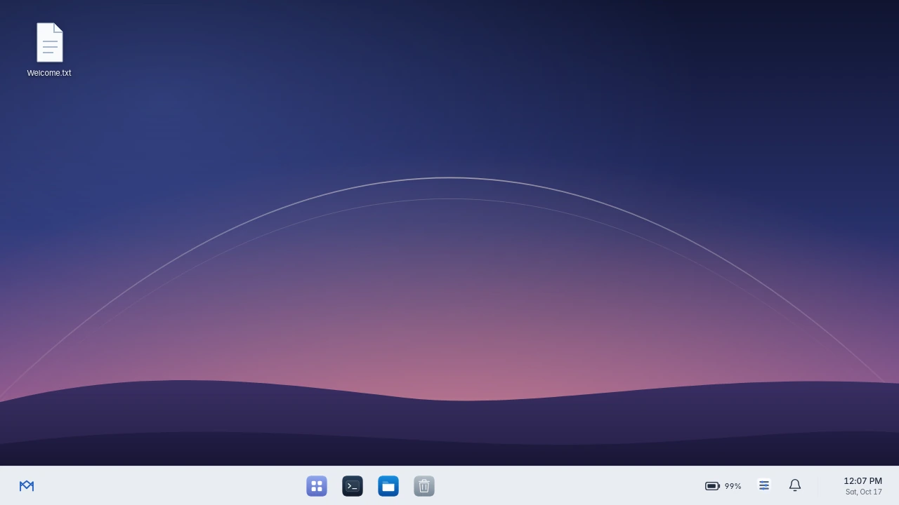

Linux · Rust · TypeScript
Meridian
A Linux desktop shell with a configurable dock, an app launcher, notifications, and settings for displays, storage, and other hardware.
Problem and contribution
Desktop controls are spread across multiple tools. I built a shell that brings everyday controls into a consistent interface.
Architecture, tradeoffs, and results
I built Meridian to bring desktop controls into one shell. Rust handles system integration, with a TypeScript interface for the dock, launcher, and settings. I used UDisks2 for storage controls and added display hot-plug handling with rollback. Compatibility depends on the available hardware and Wayland compositor protocols.

Desktop walkthrough
A silent, nine-second walkthrough made from project screenshots. Launcher · Settings
Meridian on GitHub Ask about this project